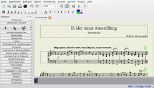
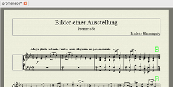
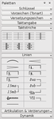
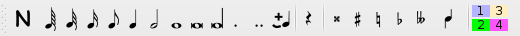
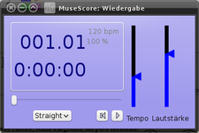
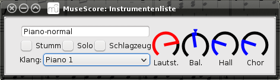
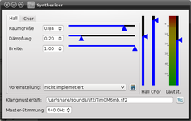
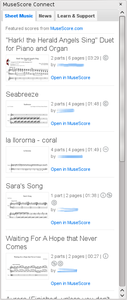
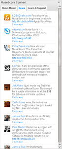
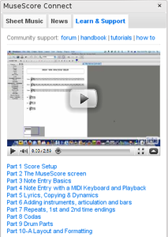

MuseScore
Dieser Artikel wurde für die folgenden Ubuntu-Versionen getestet:
Ubuntu 16.04 Xenial Xerus
Ubuntu 14.04 Trusty Tahr
Zum Verständnis dieses Artikels sind folgende Seiten hilfreich:
- Installation
- Bedienung
- Übersicht über die Bedienelemente
- Eingabemodi
- Neue Partitur erstellen
- Noteneingabe
- Formatierung der Noten und Notenzeilen
- Plugins
- Transponieren
- Takte einfügen/löschen, Auftakte
- Texte einfügen
- Optische Anpassung von Partitur und Syst...
- Stimmenauszug/Einzelstimmen erstellen
- Wiedergabe der Partitur
- Import/Export
- Community-Anbindung
- Einstellungen und Konfigurationsdateien
- Problembehebung
- Links
MuseScore  ist ein freies, GNU-GPL lizensiertes grafisches Notensatzprogramm für Linux, Windows und Mac OS X. Es bietet einen WYSIWYG-Partitur-Editor mit vielen Funktionen und liegt in mehreren Sprachen wie Englisch, Deutsch und Französisch vor. Die Bedienung ist sehr intuitiv, die Bearbeitung/Formatierung der Noten kann über die Tastatur oder Maus (Drag'n'Drop) erfolgen. Es gibt zahlreiche Import- und Export-Formate, die das Programm sehr vielseitig einsetzbar und flexibel machen.
ist ein freies, GNU-GPL lizensiertes grafisches Notensatzprogramm für Linux, Windows und Mac OS X. Es bietet einen WYSIWYG-Partitur-Editor mit vielen Funktionen und liegt in mehreren Sprachen wie Englisch, Deutsch und Französisch vor. Die Bedienung ist sehr intuitiv, die Bearbeitung/Formatierung der Noten kann über die Tastatur oder Maus (Drag'n'Drop) erfolgen. Es gibt zahlreiche Import- und Export-Formate, die das Programm sehr vielseitig einsetzbar und flexibel machen.
Auswahl einiger Programmfeatures:
grafische Partitur-Eingabe und -Darstellung (WYSIWYG)
beliebige Anzahl von Notenzeilen
bis zu vier Stimmen pro Notenzeile/Instrument
einfache und schnelle Noteneingabe mit Maus, Tastatur oder via Hardware-MIDI-Anschluss
Sequencer und FluidSynth-Softwaresynthesizer integriert
Abspielmöglichkeit der Partitur beinhaltet individuelle Einstellmöglichkeiten wie Geschwindigkeit und Lautstärke über ein virtuelles Mischpult
Automatische Transposition, beispielsweise mit oder ohne Tonart-Wechsel
Datei-Import:
Dateiexport:
Einfügen von Bildern in die Partitur
Mehrzeiliger Liedtext
Automatische Projektsicherung (einstellbare Zeitintervalle) sowie Projektwiederherstellung möglich (z.B. nach Programmabsturz)
Plattformunabhängiger Code für Linux, Windows und Mac OS X
Installation¶
MuseScore kann direkt aus den offiziellen Paketquellen installiert werden [1]:
musescore (universe)
 mit apturl
mit apturl
Paketliste zum Kopieren:
sudo apt-get install musescore
sudo aptitude install musescore
PPA¶
Die jeweils aktuelle stabile Version des Programms kann über ein "Personal Package Archiv" (PPA) [2] installiert werden.
Adresszeile zum Hinzufügen des PPAs:
ppa:mscore-ubuntu/mscore-stable
Hinweis!
Zusätzliche Fremdquellen können das System gefährden.
Ein PPA unterstützt nicht zwangsläufig alle Ubuntu-Versionen. Weitere Informationen sind der  PPA-Beschreibung des Eigentümers/Teams mscore-ubuntu zu entnehmen.
PPA-Beschreibung des Eigentümers/Teams mscore-ubuntu zu entnehmen.
Damit Pakete aus dem PPA genutzt werden können, müssen die Paketquellen neu eingelesen werden.
Nach dem Aktualisieren der Paketquellen erfolgt die Installation wie oben angegeben.
Bedienung¶
Bei Ubuntu-Varianten mit einem Anwendungsmenü kann das Programm über den Menü-Eintrag "Multimedia > MuseScore" gestartet werden.
Übersicht über die Bedienelemente¶
Nach dem Start des Programms findet man folgende Bedienelemente:
"Palette": standardmäßig an der linken Seite angedockt, mit den unterschiedlichen Symbolen und Formatierungen. Diese sind in verschiedene Kategorien aufgeteilt wie "Schlüssel" oder "Taktstriche". Hierüber erfolgt die Bearbeitung der Noten und -zeilen. Die jeweiligen Auswahlbereiche klappen nach
 -Klick auf die Kategorie aus.
-Klick auf die Kategorie aus.
"Partitur": in der Mitte gelegen, für die Bearbeitung. Zum Blättern innerhalb der Partitur verschiebt man diese einfach mit gedrückter
Maustaste. Ausgewählte Elemente oder die aktuelle Position des Cursors werden in blau dargestellt. Zoomen ist bei gedrückter
Strg über das Mausrad  möglich. Die geöffneten Dateien werden in Tabs dargestellt. Wie auch in anderen Programmen kann zwischen den Tabs gewechselt werden und diese einzeln geschlossen werden.
möglich. Die geöffneten Dateien werden in Tabs dargestellt. Wie auch in anderen Programmen kann zwischen den Tabs gewechselt werden und diese einzeln geschlossen werden.
"Symbolleisten": in den oben platzierten Symbolleisten finden sich einige wichtige Funktionen zur Noteneingabe, wie z.B. die Symbole zur Festlegung der Notenlänge vor Eingabe einer Note oder das "N"-Symbol zum Wechsel in den Noteneingabemodus (alternativ Tasteneingabe N ; siehe Eingabemodi).
Die einzelnen Bereiche wie der Palettenbereich können beliebig im Arbeitsbereich angedockt oder als schwebendes Fenster verwendet werden.
|  |
| Gesamte Arbeitsfläche |
|  |
| Partitur |
|  |
| Palettenauszug |
|  |
| Symbolleiste |
Eingabemodi¶
Musescore verfügt über zwei Eingabemodi:
"Noteneingebemodus" - Noten in die Partitur einfügen
"Bearbeitungsmodus" - Standardmodus bei Programmstart, in welchem sämtliche Formatierungen und Zusatzelemente angebracht werden können
Der Wechsel zwischen den Modi erfolgt über das "N"-Symbol in der Symbolleiste oder über die Taste N .
Neue Partitur erstellen¶
Nach dem Start des Programms kann über "Datei > Neu..." oder die Tastenkombination Strg + N eine neue Partitur erstellt werden. Im sich öffnenden Assistenten besteht die Möglichkeit. u. a. den Titel, die Instrumentation (entweder individuell bestimmbar oder mithilfe von verschiedenen Partiturvorlagen), die Tonart und die Taktart festzulegen.
Hinweis:
Zusätzliche Stimmen/Instrumente können auch nachträglich noch über "Einfügen > Stimmen/Instrumente..." oder die Taste
I (i) eingefügt oder entfernt werden.
Noteneingabe¶
Die Noteneingabe kann über MIDI-Keyboard, Tastatur oder Maus erfolgen, wobei hier nur auf die Tastatur- und Mauseingabe eingegangen werden soll. Es wird davon ausgegangen, dass bereits eine neue Partitur geöffnet wurde. In beiden Fällen gilt, dass zunächst in den Noteneingabemodus gewechselt werden muss (siehe Eingabemodi), in dem dann an der zuletzt ausgewählten Notenblattposition der Eingabecursor erscheint.
Mauseingabe (visuell, intuitiv, gut für Neueinsteiger geeignet):
Notenlänge auswählen über die Symbolleiste
Überfahren der Notenzeile mit der Maus bewirkt ein Andeuten der Note in blauer Farbe. Diese wird dann durch
-Klick auf das Notenblatt erzeugt.Mehrklänge/Akkorde können durch Einfügen weiterer Notenköpfe ober- oder unterhalb einer bereits bestehenden Note notiert werden
Tastatureingabe (effektiv, für fortgeschrittene Nutzer geeignet):
Notenlänge auswählen über die Zifferntasten 1 bis 9 (Standard: gleiche Reihenfolge wie in Symbolleiste)
Unregelmäßige Teilung (z.B. Triolen oder Quintolen) kann über Menü "Noten" > N-tolen" (alternativ Strg + Zifferntasten 2 bis 9 entsprechend der gewünschten Teilung) festgelegt werden.
Hinweis:
Es erscheinen Pausen des gewählten Notenwertes in der entsprechenden unregelmäßigen Teilung, welche im nächsten Schritt durch Noten ersetzt werden.
Einfügen der Noten durch Eingabe der Notenbuchstaben ( C = Note C, D = Note D usw). Siehe Menü "Noten > "Noten eingeben".
Mehrklänge/Akkorde können bei dieser Eingabemethode unmittelbar nach Eingabe einer Note mithilfe der Tastenkombination ⇧ +[Notenname] ergänzt werden. Alternativ bieten sich zu diesem Zweck auch folgende Tastenkombinationen an (siehe auch Menü "Noten > Markierter Note ein Intervall hinzufügen"):
Alt + 2 bis 9 (Ziffer entspricht den Intervallbezeichnungen) für Mehrklangintervall oberhalb der Note
⇧ + 2 bis 9 für Mehrklangintervall unterhalb der Note
| Übersicht über die voreingestellten Tastenkürzel bei der Noteneingabe mittels Tastatur | |
| gewünschtes Eingabeergebnis | Shortcut |
| Auswahl des Notenwerte laut Symbolleiste (64tel bis Longa) | 1 bis 9 |
| Unregelmäßige Teilung | Strg + 2 bis 9 |
| Eingabe der entsprechenden Note | [Notenname] |
| Transposition einer markierten Note in Halbtonschritten | ↑ oder ↓ |
| Hinzufügen eines weiteren Notenkopfes zur letzten markierten Note => Mehrklang | ⇧ + [Notenname] |
| Hinzufügen eines Intervalls nach oben zur letzten markierten Note => Mehrklang | Alt + 1 bis 9 |
| Hinzufügen eines Intervalls nach unten zur letzten markierten Note => Mehrklang | ⇧ + 1 bis 9 |
Hinweis:
Da das Programm MuseScore die per Tastatur eingegebenen Noten per "intelligente" Erkennung selbstständig an den Melodieverlauf anpasst, müssen die blau markiert erscheinende Noten u.U. nachträglich über die Pfeiltasten nach oben oder nach unten transponiert werden. Dieses Feature ist jedoch auch generell zur nachträglichen Transposition einzelner Noten hilfreich.
Formatierung der Noten und Notenzeilen¶
Zum weiteren Bearbeiten der Noten ist ein Umschalten in den Bearbeitungsmodus notwendig (siehe Eingabemodi).
Nach Eingabe der Noten können nun die Formatierungen geändert werden, z. B. Staccato-Zeichen, Bindebögen oder Zeilenumbrüche. Die Formatierungsmöglichkeiten finden sich in Listenfeldern in der links liegenden Palette verborgen, sind aber teilweise auch über das Menü "Einfügen" zugänglich. Für die Formatierung gibt es in der Regel zwei Vorgehensweisen:
Formatierung für eine Note übernehmen:
Markieren der Note per linkem Mausklick (Note wird blau)
Anwählen des jeweiligen Werkzeugfeldes in der Palette per Mausklick
Doppelklick auf die gewünschte Formatierung (Beispiel 1). Alternativ kann die gewünschte Formatierung auch per Drag&Drop mithilfe gedrückter linker Maustaste auch auf nicht-markierte Noten gezogen werden (Beispiel 2).
Beispiel 1: Angenommen, es soll bei einer einzelnen Note ein "Staccato"-Punkt eingefügt werden. Dazu markiert man durch Mausklick die gewünschte Noten, öffnet dann durch Mausklick die Palette "Artikulation & Verzierung" und doppelklickt das Symbol "." (Punkt).
Beispiel 2: Öffnen der Palette "Artikulation & Verzierung", anschließend bei gedrückter -Maustaste das Symbol "." (Punkt) auf die Note ziehen. Dabei wird die Zielnote beim Überfahren mit der Maus rot markiert. In diesem Zustand die Maustaste wieder loslassen, und der Punkt wird eingefügt.
Hinweis:
Teilweise (z.B. bei Crescendogabeln, Voltenklammern oder Balken-Eigenschaften) lassen sich die Elemente nur auf die in Beispiel 2 erläuterte Weise (per Drag&Drop) einfügen.
Formatierung für mehrere Noten übernehmen:
Markieren der Noten nacheinander bei gedrückter Strg -Taste mittels linker Maustaste
Doppelklick auf die gewünschte Formatierung in der Palette durchführen. Die Formatierung wird so bei allen markierten Noten eingefügt.
Nachträgliche Manipulation bereits eingefügter Formatierungen:
Verschieben: Formatierungen wie Triolenklammern, Dynamikanweisungen, Akzente etc. können nachträglich durch Erfassen mit der linken Maustaste verschoben werden.
Verzerren: Ein Doppelklick auf eingefügte Formatierungen lässt bei einigen Formatierungselementen Anfasser erscheinen, durch welche das Element in seiner Gestalt verändert und angepasst werden kann.
Plugins¶
Das Programm kann über Plugins erweitert werden, von denen nach der Installation bereits mehrere verfügbar sind (direkt anwählbar im Menü "Plugins"), zum Beispiel:
"Note Names" - Notennamen über den Noten eingefügen
"Brake every xy Measures" - automatischer Umbruchen aller Zeilen alle "xy" Takte
"ABC Import" - Dateien im ABC Format importieren
"Color Notes" - Noten je nach Tonlage automatisch einfärben lassen
Einen Überblick über weitere Plugins sowie Downloadmöglichkeit bietet eine Pluginübersicht . Die Plugins müssen in den Ordner ~/.local/share/data/MusE/MuseScore/plugins/ im Homeverzeichnis bzw. mit Root-Rechten nach /usr/share/mscore-1.2/plugins/ kopiert werden. Anschließend muss man MuseScore neu starten, um die neuen Plugins zu laden.
Transponieren¶
Das Transpositionswerkzeug mit einer Auswahl verschiedener Transpositionseinstellungen steht im Menü "Noten > Transponieren" zur Verfügung.
Einzeltöne transponieren: Einzeltöne können unter Umgehung des Transpositionswerkzeugs transponiert werden; es genügt, den gewünschten Notenkopf mit der linken Maustaste zu markieren (Notenkopf wird blau eingefärbt) und dann mittels der ↑ bzw. ↓ -Taste in die gewünschte Richtung chromatisch zu verschieben.
Einzeltakt transponieren: Markieren des jeweiligen Taktes per Mausklick auf eine freie Taktstelle (es erscheint ein blauer Rahmen) und anschließendes Anwählen des Transpositionswerkzeugs.
Zeile oder Einzelstimme transponieren: Linksklick bei gehaltener ⇧ -Taste in den ersten und letzten Takt der zu transponierende Zeile/Stimme bewirkt die Markierung des gewünschten Bereichs (blauer Rahmen). Dieser kann nun nun mittels des Transpositionswerkzeugs bearbeitet werden.
Partitur transponieren: Soll die ganze Partitur transponiert werden, genügt ein direktes Anwählen des Transpositionswerkzeugs und Bestätigung der folgenden Abfrage (es erscheint ein blauer Markierungsrahmen um die gesamte Partitur), um den Transpositionsassistenten zu öffnen.
Takte einfügen/löschen, Auftakte¶
Takt einfügen: Über Rechtsklickmenü "Einfügen > Takt einfügen" fügt das Programm einen zusätzlichen Takte vor einem zuvor mit Linksklick ausgewählten Takt (es erscheint ein blauer Markierungsrahmen) ein. Tastenkürzel: Einfg
Mehrere Takte einfügen: Über Rechtsklickmenü "Einfügen > Takte einfügen" fügt das Programm zusätzlichen Takte vor einem zuvor mit Linksklick ausgewählten Takt (blauer Rahmen) ein. Tastenkürzel: Strg + Einfg
Takt anhängen: Das Rechtsklickmenü "Einfügen > Takt anhängen" hängt einen Einzeltakt an das Ende der gesamten Partitur an. Tastenkürzel: Strg + B
Mehrere Takte anhängen: Das Rechtsklickmenü "Einfügen > Takt anhängen" hängt die gewünschte Anzahl von Takten an das Ende der gesamten Partitur an. Tastenkürzel: Strg + ⇧ + B
Takt löschen: Löschen eines markierten Takts erfolgt über Menü "Bearbeiten > Ausgewählte Takte löschen". Tastenkürzel: Strg + Entf
Mehrere Takte löschen: Linksklick bei gehaltener ⇧ -Taste in den ersten und letzten der zu löschenden Takte bewirkt die Markierung des gewünschten Bereichs (blauer Rahmen). Das Löschen erfolgt dann über Menü "Bearbeiten > Ausgewählte Takte löschen". Tastenkürzel: Strg + Entf
Auftakte erstellt man mit Rechtsklick auf einen ausgewählten Takt. Im Menü "Eigenschaften Takt" ist die Option "irregulär" anzukreuzen sowie bei der Auswahl der Taktlänge die gewünschte effektive Taktlänge einzugeben.
Texte einfügen¶
Die Note, an der der Text eingefügt werden soll, wird per Linksklick markiert. Anschließend bietet das Menü "Einfügen > Text" eine Auswahl an verschiedenen Textarten in verschiedenen Formatierungen, wie z.B. Titel, Akkordbezeichnungen, Liedtext, Fingersatz, Dynamik oder Tempobezeichnungen. Die eingefügten Standardtexte (z.B. Tempotexte) können auch im Nachhinein noch durch Doppelklick entsprechend den eigenen Bedürfnissen angepasst und überschrieben werden.
Musescore bietet derzeit keine Möglichkeiten, Liedtexte zu im- oder exportieren.
Optische Anpassung von Partitur und Systemen¶
Mithilfe der Unterpunkte aus dem Menü "Darstellung" ist eine optische Anpassung der gesamten Partitur sowie der Systeme im Einzelnen möglich.
Seiteneinstellungen: Festlegen von Hoch-/Querformat, Seitenrändern, Maßstab u.a.
Dehnen/Zusammenziehen von Takten: durch Linksklick auf eine freie Fläche in einem Takt wird dieser markiert (es erscheint ein blauer Rahmen) und kann anschließend mit Hilfe des "Dehnen"- oder "Zusammenziehen"-Werkzeugs nach den eigenen Bedürfnissen optisch gestreckt oder gestaucht werden. Tastenkürzel: { bzw. } . Ein Zurücksetzen erfolgt über "Darstellung" > "Dehnung zurücksetzen".
Zeilen- und Seitenumbrüche erfolgen über Menü "Darstellung > Umbrüche und Abstandhalter" (alternativ auch über die Palette erreichbar) und werden per Drag&Drop (Zieltakt verfärbt sich braun) an der entsprechenden Partiturstelle platziert.
Notenzeilenabstände werden über sog. Abstandhalter realisiert. Über Menü "Darstellung > Umbrüche und Abstandhalter" (alternativ über die Palette) wird der Notenzeilen-Abstandhalter per Drag&Drop an der entsprechenden Partiturstelle platziert (Zieltakt verfärbt sich braun). Jeder Abstandhalter wirkt nach unten; er muss nach wunschgemäßer Platzierung per Doppelklick aktiviert werden, wodurch ein Anfasser sichtbar wird. Dieser wird dann so lange nach unten gezogen, bis der gewünschte Zeilenabstand erreicht ist.
Rahmen einfügen: Mithilfe von horizontalen oder vertikalen Rahmen kann eine Partitur optisch weiter strukturiert werden, beispielsweise um Platz für eine Titelzeile zu schaffen sowie um horizontale Einzüge oder Systemtrennungen für den Beginn einer Coda festzulegen. Zum Einfügen eines Rahmens wird der Takt, vor dem der Rahmen platziert werden soll, markiert und anschließend über Menü "Einfügen > Takte" der gewünschte Rahmen (horizontal oder vertikal) ausgewählt. Die Menüpunkte Horizontalen bzw. Vertikalen Rahmen anhängen hingegen hängen den gewünschten Rahmen an das Ende der Partitur an. Tipp: Eingefügte Rahmen können per Rechtsklick über ein eigenes Menü mit Textinhalten gefüllt werden.
Stimmenauszug/Einzelstimmen erstellen¶
Aus einer mehrstimmigen Partitur können nachträglich Stimmenauszüge/Einzelstimmen, beispielsweise für kammermusikalisches Musizieren, erstellt werden. Hierzu wählt man das Menü "Datei > Einzelstimmen" aus. Im erscheinenden Assistenten klickt man auf "Neu" und wählt das/die gewünschte(n) Einzelinstrument(e); nach Wunsch können noch Dateiname und Titel festgelegt werden. Die Stimmenerstellung wird schließlich mit Klick auf "Einzelstimme erstellen" abgeschlossen.
Wiedergabe der Partitur¶
Es ist möglich, die geschriebene Partitur über die Soundkarte wiedergeben zu lassen. Dazu stehen u.a. folgende Funktionen zur Verfügung (zu finden unter "Ansicht > Wiedergabepult/Mischpult/Synthesizer", mit welchen detaillierte Einstellungen wie Lautstärke, Tempo, Hall u.a. vorgenommen werden können:
|  |
| Wiedergabepult |
|  |
| Mischpult |
|  |
| Synthesizer |
Hinweis:
Ein tempo- und agogikrealistischeres Wiedergabe- und Exportverhalten des Sounds kann erreicht werden, wenn den zuvor in die Partitur eingefügten Tempotexten Metronomwerte zugewiesen werden. Auch Noten können Abspieleigenschaften wie Abspielintensität, Stimmung oder Anschlagsart angehängt werden. Diese Zuweisungen geschehen über Rechtsklick auf die jeweilige Tempobezeichnung/Note und Auswahl von "Eigenschaften Tempotext" bzw. "Eigenschaften Note".
Import/Export¶
Der Import und Export von Partituren erfolgt zentral über die normalen Menüpunkte "Datei > Öffnen" bzw. "Datei > Speichern als...". Die unterstützten Dateiformate werden im dortigen Aufklappfeld angezeigt.
Community-Anbindung¶
MuseScore bietet über "MuseScore Connect" eine Anbindung zur Community an. Nach Auswahl über "Ansicht > MuseScore Connect" öffnet sich ein weiterer Bereich auf der rechten Seite der Arbeitsfläche. Über diesen Bereich ist es nun durch Auswahl der oben angezeigten Reiter möglich, fertige Musikstücke von anderen Benutzern zu öffnen, Neuigkeiten rund um MuseScore zu erhalten und Videoanleitungen anzusehen.
|  |
| Sheet Music Benutzererstellte Musikstücken |
|  |
| News Neuigkeiten |
|  |
| Learn & Support Videoanleitungen |
Einstellungen und Konfigurationsdateien¶
Das Wissen um die Ablage der Konfigurationsdateien kann hilfreich sein, um die Einstellungen auf einen anderen PC zu übertragen.
Tastatur-Shortcuts¶
Die Tastenkürzel können individuell nach eigenem Wunsch verändert werden ("Bearbeiten > Einstellungen > Tastenbefehle").
Einstellungen der Palette¶
Die Anordnung der Kategorien in der Palette kann angepasst werden. Dazu einmal lang auf die gewünschte Kategorieleiste innerhalb des Palettenbereichs -klicken, bis ein Auswahlmenü erscheint. Dort kann die gewählte Palette nach unten oder oben verschoben werden sowie nicht benötigte Paletten gelöscht oder neue erstellt werden.
Zurücksetzen der Konfiguration¶
Sollte durch missglückte Konfigurationsarbeiten an den Programmeinstellungen (bspw. zum Wiederherstellen von irrtümlich gelöschten Paletten o.ä.) ein Zurücksetzen der Programmkonfiguration in den Ursprungszustand gewünscht oder erforderlich sein, ist zunächst das Programm zu schließen. Anschließend ist ein Neustart mithilfe des betriebssystemeigenen (in der Voreinstellung über die Tastenkombination
Alt +
F2 erreichbaren) „Anwendung ausführen”-Dialogfensters mittels des Befehls musescore -F durchzuführen, wobei der übergebene Parameter -F das Zurücksetzen der Konfiguration) bewirkt.
Achtung!
Das Zurücksetzen der MuseScore-Konfiguration auf den Ursprungszustand führt dazu, dass alle geänderten Einstellungen im Programm verloren gehen.
Konfigurationsdateien¶
Die Dateien, welche die Einstellungen von MuseScore enthalten, befinden sich unter ~/.config/MusE/MuseScore.ini sowie im Ordner ~/.local/share/data/MusE/MuseScore/.
Ab Version 2 haben sich die Speicherorte geändert auf ~/.config/MuseScore/Musescore2.ini und ~/.local/share/data/MuseScore/MuseScore2/.
Problembehebung¶
Keine Audioausgabe¶
Auf manchen Systemen ist die Audioausgabe zunächst fehlerhaft konfiguriert. Das manuelle Festlegen des Ausgabegeräts findet unter "Bearbeiten > Einstellungen" im Tab "I/O" statt. Wenn kein Hardwaredefekt vorliegt wird der Ton nach der Aktivierung von "PortAudio" und dem Festlegen von "Api: ALSA" und "Gerät: sysdefault" auch immer über die Systemlautsprecher ausgegeben.
MIDI-Verbindungen¶
Wenn man MuseScores MIDI-Fähigkeiten nutzen und das System beispielsweise mit einem MIDI-Keyboard verbinden möchte, kann es Verbindungsprobleme geben. Begründet sein können diese durch Schwierigkeiten mit ALSA-MIDI. In diesen Fällen kann die alternative Verbindungsmethode über JACK-MIDI helfen. Dabei deaktiviert man zunächst ALSA-MIDI, um dann im zweiten Schritt unter JACK-MIDI eine besondere Überbrückungsfunktion einzurichten.
Hinweis:
Grundsätzlich erdacht wurde die im folgenden skizzierte Methode von den Entwicklern von JACK und Ardour, denen es darum ging, den Rechner mit einem externen Steuerpult (auch MIDI-Controller oder DAW-Controller genannt) zu verbinden. Die ausführliche Anleitung findet sich auf einer speziellen Seite der Ardour-Community, Ergänzendes im Ardour-Online-Handbuch  . Dort werden auch Automationsmöglichkeiten behandelt – diese erleichtern die Handhabung. Für die eigentliche Nutzung muss man sie allerdings nicht zwingend einrichten. Deshalb werden sie im Folgenden nicht erwähnt.
. Dort werden auch Automationsmöglichkeiten behandelt – diese erleichtern die Handhabung. Für die eigentliche Nutzung muss man sie allerdings nicht zwingend einrichten. Deshalb werden sie im Folgenden nicht erwähnt.
ALSA-MIDI deaktivieren¶
Dazu sind zwei Justagen im JACK-Fenster "Einstellungen" erforderlich:
In der Registerkarte "Einstellungen" wählt man im Feld "MIDI-Treiber" die Version "keiner"
In der Registerkarte "Verschiedenes" wird das Feld "Unterstützung für ALSA-Sequenzer bereitstellen" deaktiviert
Dann JACK neu starten. Damit ist die Registerkarte "ALSA-MIDI" im QJackCtl-Fenster verschwunden, und es steht dort nur noch die Karte "JACK-MIDI".
Brückenfunktion a2jmidid einrichten¶
a2jmidid bildet eine Brücke zwischen ALSA und JACK. Das Programm lässt sich über das folgende Paket installieren:
a2jmidid (universe)
mit apturl
Paketliste zum Kopieren:
sudo apt-get install a2jmidid
sudo aptitude install a2jmidid
Um a2jmidid zu starten, muss zunächst JACK gestartet sein. Dann gibt man in ein Terminal ein:
a2jmidid -e
Im QJackCtl-Verbindungsfenster auf der Registerkarte "JACK-MIDI" findet sich jetzt ein Eintrag "a2j" und darunter ein Baum mit den MIDI-Ports der angeschlossenen Geräte. Die werden nun mit den entsprechenden Ein- und Ausgängen von MuseScore verbunden.
Hinweis:
Einzelheiten zum Umgang mit a2jmidid finden sich auf einer sehr ausführlichen französischen Internetseite über Musikproduktion mit Linux-Systemen  . Der dort angegebene Download-Link enthält zwar einen Tippfehler, aber man sollte ohnehin über die Paketverwaltung installieren.
. Der dort angegebene Download-Link enthält zwar einen Tippfehler, aber man sollte ohnehin über die Paketverwaltung installieren.
Links¶
Projektseite
- mit englischsprachigen VideoanleitungenMuseScore - Wikipedia
Notensatzprogramm für Linux, Windows und Mac OS X
- Test bei Netzwelt.de, 09/2011Noten und Akkorde
 Programmübersicht
Programmübersicht
- Erstellt mit Inyoka
-
 2004 – 2017 ubuntuusers.de • Einige Rechte vorbehalten
2004 – 2017 ubuntuusers.de • Einige Rechte vorbehalten
Lizenz • Kontakt • Datenschutz • Impressum • Serverstatus -
Serverhousing gespendet von